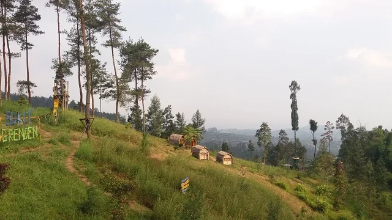

Destinasi Wisata Terdekat
 Wisata Alam
Wisata Alam
Top Selfie Pinusan
Wisata hutan pinus ikonik di lereng Merbabu dengan berbagai spot foto estetik, jembatan gantung, dan udara pegunungan yang sejuk.

Wisata AlamBukit Grenden Magelang
Wisata alam hutan pinus estetik di lereng Gunung Merbabu yang terkenal dengan spot foto rumah pohon, gardu pandang, dan udara pegunungan yang sangat sejuk.